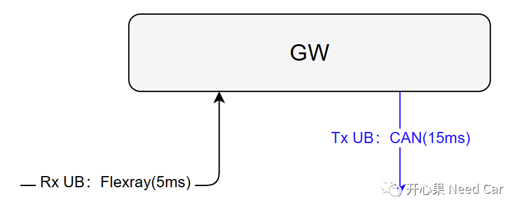
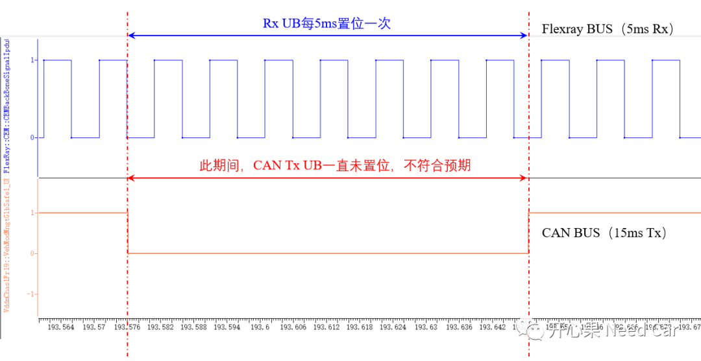
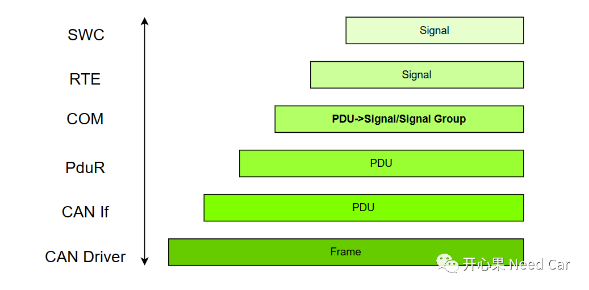
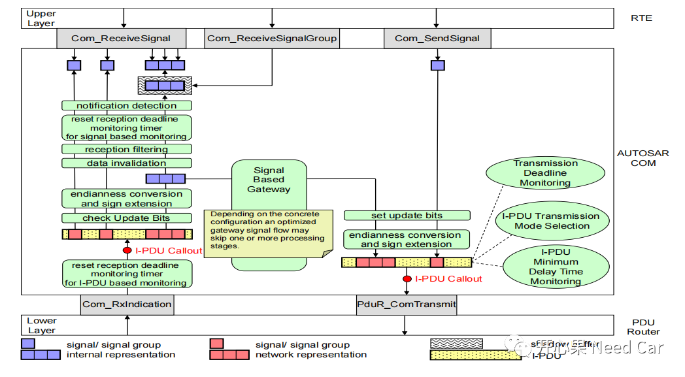
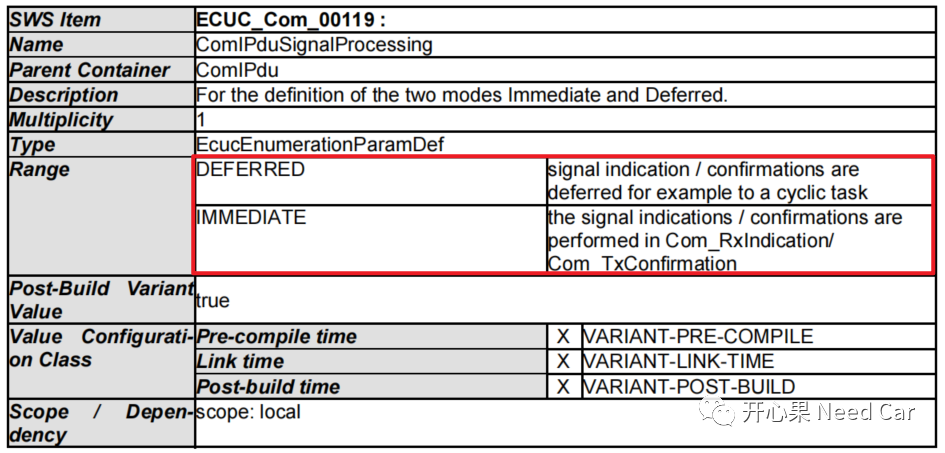
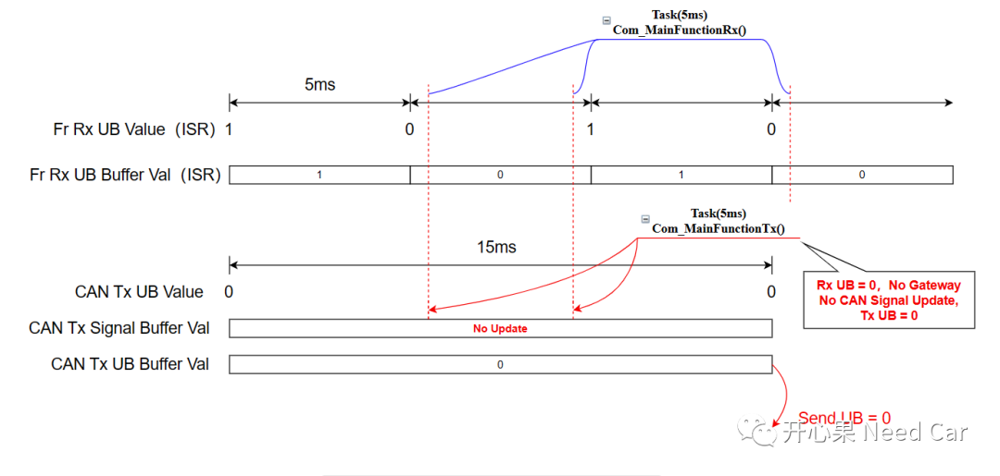
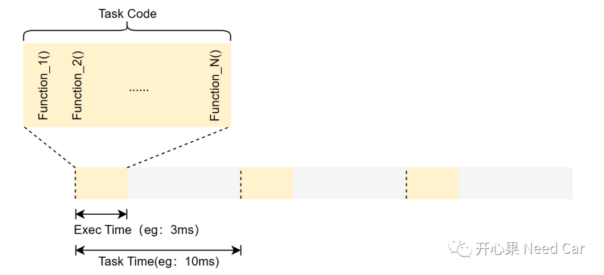
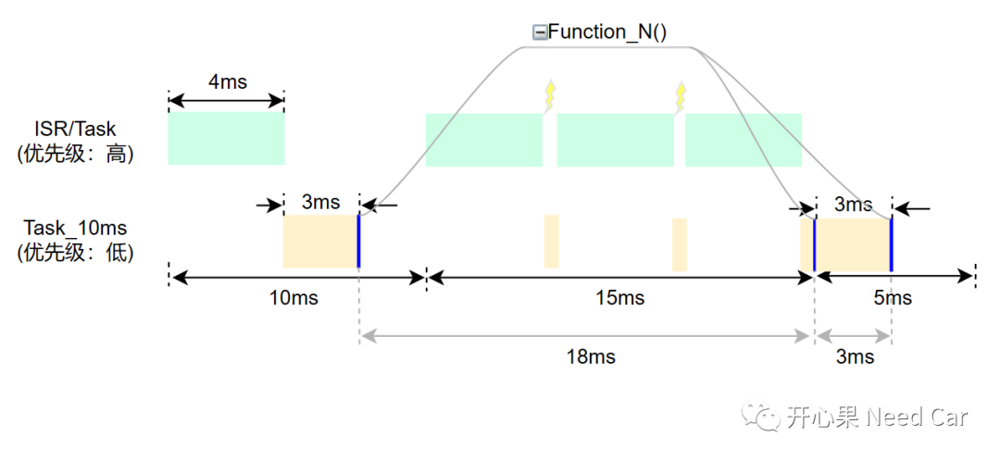

最近遇到了一个UB（Update Bit）失效的问题，此类问题比较典型，在此整理一下，做一个讨论。背景：一些信号需要网关节点转发，信号及信号对应的UB通过Flexray总线发送给网关节点（GW），GW将信号转发到目标CAN总线，信号及发送信号对应的UB周期为15ms，示意如下所示：

在CP Autosar的架构中，接收端，信号或者信号组对应的Rx UB置位（=1）方可路由（转发）。而发送端，Tx UB的更新由COM模块操作，即：如果信号或者信号组有数据更新，则Tx UB置位。对应上图，如果15ms内，GW在Flexray总线上收到的Rx UB = 1（周期5ms），即可将信号转发到CAN总线上，并且CAN总线上的Tx UB = 1。但是，实际工况如下所示：

如上图，Rx UB每间隔5ms，置位一次，但是CAN总线上，有一段时间，Tx UB一直未置位，同时，CAN BUS上，Tx UB对应的信号值也未更新。
搞清上述问题造成的原因前，先回顾一下COM层的Signal路由原理。CAN BUS中，信息以帧为最小单位传输，驱动层描述为帧（Frame)，驱动层通过网络层向上传输时，称为PDU（Protocol Data Unit），信息进一步传输到COM模块时，也是一个PDU，为了方便用户层的使用，COM层会进一步地拆分成信号（Signal），以CAN总线为例，通信模块之间的信息交互，示意如下：

在弄清楚问题之前，回顾一下信号（Signal）的路由过程。按照Autosar COM模块的描述，信号路由过程如下所示：

提示：Autosar的规范中，PduR处理PDU的路由，一般，PDU的路由，需要目标地址和源地址对应的PDU周期一致；COM处理Signal的路由，Signal的路由，目标地址和源地址的周期可以不同。在工程中，有的节点包含多种总线，有时，不同总线之间需要路由一些信息，即：Signal路由。信号如果路由呢？如上图。Step1：PduR会通过COM层注册的回调接口Com_RxIndication()，将底层接收的数据缓存到COM，此时，复位Deadline Monitor Timer；Step2：如果使能了PDU Callout，程序执行用户接口，进行接收前的处理动作。提示：此处可以进行一些用户自定义动作；Step3：将接收到的信息缓存到COM的接收缓存区；Step4：如果信号或者信号组配置了UB，检查UB位。注意：如果需要路由的信号配置了UB，且UB==1，信号可路由，否则，信号不被路由；Step5：字节序转换，这里的字节序转换主要针对大于一个字节长度的信号；Step7：信号在另一BUS上，按照所属的PDU周期或者发送行为发送到总线。先说造成上述问题的原因：Task抖动造成Rx UB数据被覆盖，导致信号未路由。
（一）信号处理模式
为什么Task抖动会造成Rx UB被覆盖？回答这个问题，需要先了解COM模块处理Signal的模式。COM模块处理Signal有两种模式：DEFERRED和IMMEDIATE。在配置选项中，针对参数ComIPduSignalProcessing的配置可以选择DEFERRED或者IMMEDIATE，如下所示：

如果使用DEFERRED模式，意味着此PDU对应的信号可以延迟一个Cycle处理（eg：延迟5ms处理）；如果使用IMMEDIATE模式，意味着PDU对应的信号立即处理，如果信号或者信号组对应的Rx UB = 1，即：信号和信号组可以立即Copy到对应的发送端缓冲区。问题工况中，使用了DEFERRED模式处理模式，每次Flexray接收的Rx UB数据延迟一个Cycle处理，而Rx UB的处理在Com_MainFunctionRx()对应的Task中，当Task抖动时，COM模块接收的Rx UB恰巧判断到Rx UB = 0，进而使得接收的信号无法路由。所以，当CAN BUS上发送对应数据时，发现Tx IPDU对应的Signal从未更新过，COM模块也就不将对应的Tx UB置位。如上描述，示意如下所示：

Task抖动的实质是因为Task中的代码未有在Task对应的时间内被完整地执行一遍造成的。先理解一下Task周期（Period）、Task对应Code的执行时间关系，如下所示：

如上图，Task的周期是10ms（下文称Task_10ms），Task_10ms对应的Code执行时间需要3ms，Code由多个函数构成：Function_1()...Function_N()。当Task_10ms分配的优先级较低时，Task_10ms在执行的过程中，会被高优先级的Task和中断不断抢占，进而可能导致Task_10ms对应的Code不能在10ms的时间内被完整得执行一次，也就意味着，Code的部分函数不能在10ms的时间内被完整的执行一次，比如：Function_N()，如下所示：
如上图，假设Function_N()在Task_10ms对应Code的末端，即：最后执行的代码。在第一个10ms cycle内，Task_10ms被高优先级Task和ISR抢占了4ms的CPU使用时间，但是在10ms内，Function_N()仍然被执行了一次；在第二个10ms cycle内，Task_10ms被高优先级Task和ISR抢占了8ms的CPU使用时间，抢占间隔1ms，导致Function_N()不能在10ms内被执行到，而是需要15ms时间，Function_N()才再次执行到，至此，两次Function_N()执行间隔为18ms；在接下来的时间，Task_10ms再次被执行，期间没有被其他ISR/高优先级Task抢占，两次Function_N()执行间隔为3ms。所以，Task的抖动会影响Task对应Code的执行时机，进而使得某些函数执行间隔不稳定。
对应ComIPduSignalProcessing的处理模式由DEFERRED设置为IMMEDIATE。
点击下方关注，一起聊聊Autosar/嵌入式，如果需要，联系作者进群，给你更专业的解答